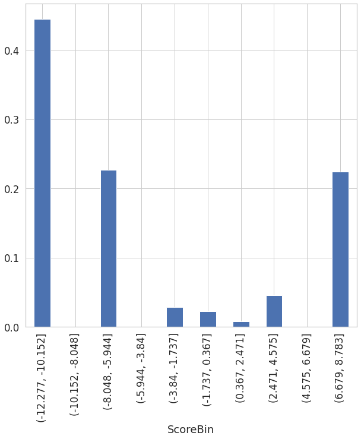
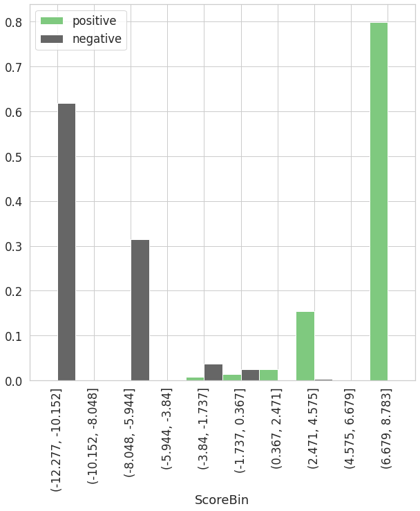

1. General Provisions
-
1.1. Purpose of the Document
This report is made to ensure the continuity of business processes, preserve and share internal organization expertise within the Group, as well as to prove the feasibility and validity of the developed model.
To achieve the goals, the Report provides insights into some essential methodological approaches to modeling.
-
1.2. Goals and Tasks which Require Building a Model
-
Определение класса жилья
-
-
1.3. Document Structure
- Section Model structure contains model description: features, coefficients of the regression model, splitting features into bins.
- Section Validation tests contains information about validation tests.
The report has the following structure:
-
1.4. Model Summary
Key model identifiers are given in Table 1.
Table 1. Model identifiers
Parameter Value Model name / ID Model_Classifier Report version 1 Model customer Дипломный проект Name of the Group member and high level department SkillFactory Model developer (if an external developer is involved, it is necessary to indicate Company's name) Лина Description and specification of datasets that are used to develop and test the model are presented in Table 2.
Table 2. Summary of data sets used to build the model
Parameter Training set Test set Target event description Стоимость за квадратный метр превышает 137974.27 Non-target event description Стоимость за квадратный метр меньше 137974.27 Observations count in sets 123491 42536 Target events count 34720 13013 Non-target events count 88771 29523 Mean of target in sets 28.12% 30.59% Predictions of the model trained on the training set are shown in Table 3.
Table 3. Model predictions (trained using the training set)
Parameter Training set Test set AUC 99.89% 99.95% Gini 99.79% 99.90%
2. Model Structure
-
2.1. Coefficients of the Regression Model
Coefficients of the regression model are shown in Table 4.
Table 4. Coefficients of the regression model
Feature name Regression coefficient median_price_sqm -0.980555 ceiling_height -0.329576 
-
2.2. Splitting Features into Bins and WoE Values in them


3. Validation Tests
-
3.1. Differences in the Number of Missing Values between Training and Test Sets
Statistics related to the number of missing values between training and test sets are shown in Table 5.
Table 5. Missing values
Feature name Number of valid values in the training set Number of valid values in the test set Number of missing values in the training set Number of missing values in the test set Percentage of valid values in the training set Percentage of valid values in the test set Difference in percentage of valid values in sets median_price_sqm 123491 42536 0 0 0.00 0.00 0.00 ceiling_height 123491 42536 0 0 0.00 0.00 0.00 -
3.2. Classification Quality for Each of the Final Model's features


-
3.3. Confidence Interval for Gini Index
-
95% confidence interval for Gini index:
- - In the training set: (0.998, 0.998)
- - In the test set: (0.999, 0.999)
-
3.4. P-value for Model Coefficients
For features in training set:
Feature name P-value median_price_sqm 0.0 ceiling_height 0.0 Intercept_ 0.0 For features in the test set:
Feature name P-value ceiling_height 1.6e-05 median_price_sqm 0.0 Intercept_ 0.0 -
3.5. One-dimensional Analysis
Gini for the training set
Gini for the test set
-
3.6. Check for Monotony


-
3.7. Check for Backlash


-
3.8. Check for VIF
Feature name VIF value median_price_sqm 1.544278 ceiling_height 1.544278 -
3.9. PSI
Total PSI
Feature name PSI value median_price_sqm 0.021987 ceiling_height 0.000244 PSI for non-target events
Feature name PSI value ceiling_height 0.00304 median_price_sqm 0.000424 PSI for target events
Feature name PSI value median_price_sqm 0.071783 ceiling_height 0.003922 Grouping by predictions on the training set (total)

Grouping by predictions of target and non-target events on the training set

Grouping by predictions on the test set (total)

Grouping by predictions of target and non-target events on the test set
PSI by grouped predictions of model
Total PSI 0.034239 PSI for non-target events 0.008776 PSI for target events 0.091184
4. Additional Reports
-
4.1. Prediction Bin Statistics
Mean value of the target on the training and test set
Prediction statistics for the training set
ScoreBin count mean std min 25% 50% 75% max (-12.277, -11.204] 50029.0 0.0 0.0 0.0 0.0 0.0 0.0 0.0 (-11.204, -10.152] 4880.0 0.0 0.0 0.0 0.0 0.0 0.0 0.0 (-10.152, -9.1] 0.0 nan nan nan nan nan nan nan (-9.1, -8.048] 0.0 nan nan nan nan nan nan nan (-8.048, -6.996] 22325.0 0.0004 0.0001 0.0003 0.0003 0.0003 0.0005 0.0007 (-6.996, -5.944] 5645.0 0.001 0.0001 0.0009 0.0011 0.0011 0.0011 0.0011 (-5.944, -4.892] 0.0 nan nan nan nan nan nan nan (-4.892, -3.84] 0.0 nan nan nan nan nan nan nan (-3.84, -2.789] 1529.0 0.0551 0.0 0.0551 0.0551 0.0551 0.0551 0.0551 (-2.789, -1.737] 2023.0 0.1105 0.0202 0.0888 0.0888 0.1057 0.1408 0.1408 (-1.737, -0.685] 2719.0 0.163 0.0 0.163 0.163 0.163 0.163 0.163 (-0.685, 0.367] 0.0 nan nan nan nan nan nan nan (0.367, 1.419] 0.0 nan nan nan nan nan nan nan (1.419, 2.471] 951.0 0.8825 0.023 0.8665 0.8665 0.8665 0.9156 0.9156 (2.471, 3.523] 5663.0 0.9523 0.0083 0.9293 0.9559 0.9559 0.9559 0.9559 (3.523, 4.575] 0.0 nan nan nan nan nan nan nan (4.575, 5.627] 0.0 nan nan nan nan nan nan nan (5.627, 6.679] 0.0 nan nan nan nan nan nan nan (6.679, 7.731] 1981.0 0.9995 0.0 0.9995 0.9995 0.9995 0.9995 0.9995 (7.731, 8.783] 25746.0 0.9998 0.0 0.9997 0.9998 0.9998 0.9998 0.9998 Prediction statistics for the test set
ScoreBin count mean std min 25% 50% 75% max (-12.277, -11.204] 16465.0 0.0 0.0 0.0 0.0 0.0 0.0 0.0 (-11.204, -10.152] 1554.0 0.0 0.0 0.0 0.0 0.0 0.0 0.0 (-10.152, -9.1] 0.0 nan nan nan nan nan nan nan (-9.1, -8.048] 0.0 nan nan nan nan nan nan nan (-8.048, -6.996] 7700.0 0.0004 0.0001 0.0003 0.0003 0.0003 0.0005 0.0007 (-6.996, -5.944] 1802.0 0.0011 0.0001 0.0009 0.0011 0.0011 0.0011 0.0011 (-5.944, -4.892] 0.0 nan nan nan nan nan nan nan (-4.892, -3.84] 0.0 nan nan nan nan nan nan nan (-3.84, -2.789] 743.0 0.0551 0.0 0.0551 0.0551 0.0551 0.0551 0.0551 (-2.789, -1.737] 786.0 0.1088 0.0198 0.0888 0.0888 0.1057 0.1057 0.1408 (-1.737, -0.685] 492.0 0.163 0.0 0.163 0.163 0.163 0.163 0.163 (-0.685, 0.367] 0.0 nan nan nan nan nan nan nan (0.367, 1.419] 0.0 nan nan nan nan nan nan nan (1.419, 2.471] 380.0 0.8791 0.0214 0.8665 0.8665 0.8665 0.9156 0.9156 (2.471, 3.523] 974.0 0.9505 0.0098 0.9293 0.948 0.9559 0.9559 0.9559 (3.523, 4.575] 0.0 nan nan nan nan nan nan nan (4.575, 5.627] 0.0 nan nan nan nan nan nan nan (5.627, 6.679] 0.0 nan nan nan nan nan nan nan (6.679, 7.731] 906.0 0.9995 0.0 0.9995 0.9995 0.9995 0.9995 0.9995 (7.731, 8.783] 10734.0 0.9998 0.0 0.9997 0.9998 0.9998 0.9998 0.9998 -
4.2. Correlations by Factors Included in the Model
-
4.3. Scorecard
- __NaN__ - separate group with WoE evaluation
- __NaN_0__ - separate group with WoE = 0
- __NaN_maxfreq__ - added to the most frequent group without WoE evaluation
- __NaN_maxp__ - added to the group with maximum probability without WoE evaluation
- __NaN_minp__ - added to the group with minimum probability without WoE evaluation
- __Small__ - separate group with WoE evaluation
- __Small_nan__ - to the NaN group
- __Small_0__ - separate group with WoE = 0
- __Small_maxfreq__ - added to the most frequent group without WoE evaluation
- __Small_maxp__ - added to the group with maximum probability without WoE evaluation
- __Small_minp__ - added to the group with minimum probability without WoE evaluation
Variable Value WOE COEF POINTS Intercept None None -1.11 -1.11 median_price_sqm median_price_sqm <= 76889.48 10.67 -0.98 -10.46 median_price_sqm 76889.48 < median_price_sqm <= 117760.72 6.36 -0.98 -6.23 median_price_sqm 117760.72 < median_price_sqm <= 137510.53 1.07 -0.98 -1.05 median_price_sqm 137510.53 < median_price_sqm <= 150134.05 -3.74 -0.98 3.67 median_price_sqm median_price_sqm > 150134.05 -9.56 -0.98 9.37 median_price_sqm __NaN_0__ 0 -0.98 0.0 ceiling_height ceiling_height <= 0.99 2.09 -0.33 -0.69 ceiling_height 0.99 < ceiling_height <= 1.17 0.53 -0.33 -0.18 ceiling_height 1.17 < ceiling_height <= 1.4 -0.05 -0.33 0.02 ceiling_height 1.4 < ceiling_height <= 1.54 -1.04 -0.33 0.34 ceiling_height ceiling_height > 1.54 -1.57 -0.33 0.52 ceiling_height __NaN_0__ 0 -0.33 0.0
Missing values processing legend:
Rare/unknown category processing legend: -
4.4. Feature Selection History
Feature apartment_ratio Pruned during regression refit art_cnt Pruned during regression refit art_cnt_bmax Low importance art_cnt_bmin Low importance beauty_cnt Pruned during regression refit beauty_cnt_bmax Low importance beauty_cnt_bmin Low importance building_type_ANOTHER Pruned during regression refit building_type_ANOTHER_bmax Low importance building_type_ANOTHER_bmin NaN values building_type_BLOCK Pruned during regression refit building_type_BLOCK_bmax Low importance building_type_BLOCK_bmin NaN values building_type_BRICK Pruned during regression refit building_type_BRICK_bmax Low importance building_type_BRICK_bmin Low importance building_type_MONOLIT Pruned during regression refit building_type_MONOLIT_bmax Low importance building_type_MONOLIT_bmin Low importance building_type_PANEL Pruned during regression refit building_type_PANEL_bmax Low importance building_type_PANEL_bmin Low importance building_type_UNKNOWN Pruned during regression refit building_type_UNKNOWN_bmax Low importance building_type_UNKNOWN_bmin Low importance cafe_restaurant_eating_out_cnt Pruned during regression refit cafe_restaurant_eating_out_cnt_bmax Low importance cafe_restaurant_eating_out_cnt_bmin Low importance ceiling_height Selected; Gini = 0.68, IV = 2.0 ceiling_height_bmax Pruned during regression refit ceiling_height_bmin Low importance chain_cnt Pruned during regression refit chain_cnt_bmax Low importance chain_cnt_bmin Low importance city_quadkey Pruned during regression refit entertainment_cnt Pruned during regression refit entertainment_cnt_bmax Low importance entertainment_cnt_bmin Low importance expect_demolition Pruned during regression refit expect_demolition_bmax Low importance expect_demolition_bmin NaN values flats_count Pruned during regression refit flats_count_bmax Pruned during regression refit flats_count_bmin Pruned during regression refit groceries_and_everyday_items_cnt Pruned during regression refit groceries_and_everyday_items_cnt_bmax Low importance groceries_and_everyday_items_cnt_bmin Low importance healthcare_cnt Pruned during regression refit healthcare_cnt_bmax Low importance healthcare_cnt_bmin Low importance hol_cnt Low importance laundry_and_repair_services_cnt Pruned during regression refit laundry_and_repair_services_cnt_bmax Low importance laundry_and_repair_services_cnt_bmin Low importance median_price_sqm Selected; Gini = 1.0, IV = 16.93 month__F__d NaN values month__F__m Low importance month__F__wd Pruned during regression refit month__F__y Pruned during regression refit month_num Pruned during regression refit offer_count Pruned during regression refit prehol_cnt Pruned during regression refit quarter Pruned during regression refit rooms_offered_1_ratio Pruned during regression refit rooms_offered_2_ratio Pruned during regression refit rooms_offered_3_ratio Pruned during regression refit rooms_offered_4_more_ratio Pruned during regression refit shopping_cnt Pruned during regression refit shopping_cnt_bmax Low importance shopping_cnt_bmin Low importance sport_cnt Pruned during regression refit sport_cnt_bmax Low importance sport_cnt_bmin Low importance studio_ratio Pruned during regression refit total_area_avg Pruned during regression refit unique_active_building_series_count Pruned during regression refit unique_active_buildings_count Pruned during regression refit -
4.5. Feature Contribution in the Model
Feature Contribution to ROC AUC ceiling_height 0.0001 median_price_sqm 0.1579